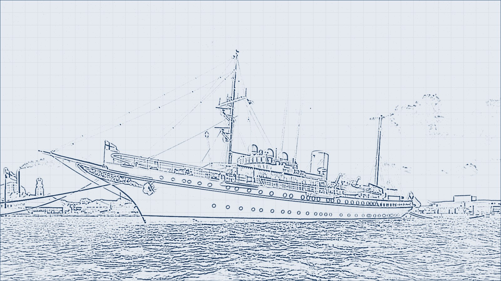
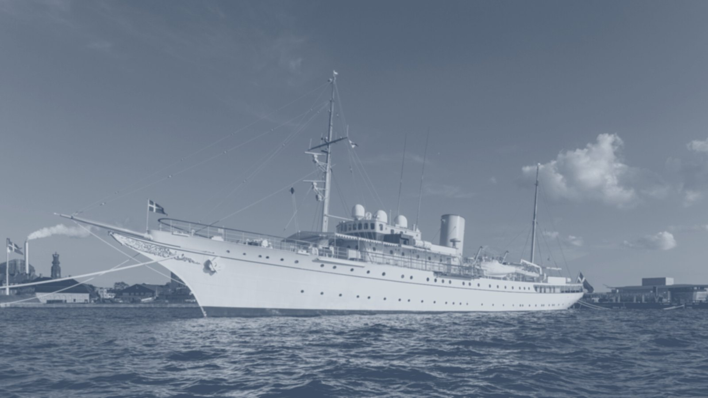
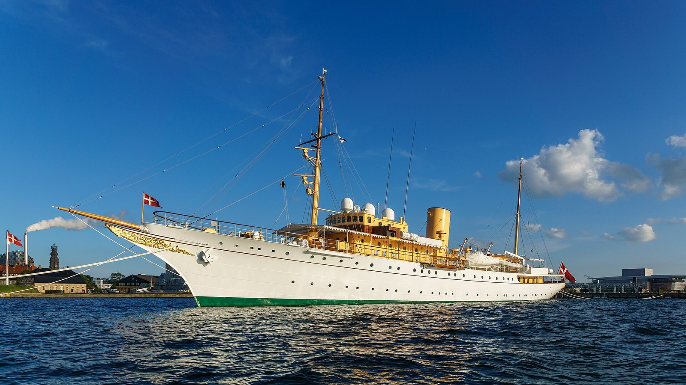

Ebbline is a studio of twelve naval architects on the Bergen waterfront, drawing quiet, efficient yachts and working vessels that last.
Scroll to loft the hull ↓
01 / Method
We begin with a line.
Every vessel starts as a lines plan: stations, waterlines and a sheer. Deck by deck the drawing gains weight, until paint, teak and glass take over the linework.
Lines
Structure
Superstructure
Finish
02 / Decks
Five decks, one hull.
Ebb 30, a 30-metre explorer yacht for eight guests. Each deck steps back to open a terrace over the one below.
03 / Light
Designed for the whole voyage.
We model the sun hour by hour. Window shades close against the noon glare and open again for the long gold of an evening at anchor.
Morning07:00
04 / Selected work
Recent vessels.
Six of forty-one. Each one faired by hand, tank-tested, and launched with the same small team.
Stand-in photographs of real vessels by other designers and yards, used under free licences for this concept demo. Photo credits are in the footer.
Explorer Yacht of the Year 2025Nordic Marine Design PrizeLow-Wake Award 2024Sea Trials Medal — EfficiencyFjord Ferry Competition
AluminiumTeakCarbonSteelLinenCork
Manifesto
We design forthe sea state.the crew.the horizon.fifty years afloat.
[60.393, 5.324]01 / 04
0Years at sea
0Vessels launched
0Hull forms tank-tested
0Lower fuel burn*
*Average vs. comparable hull forms at cruising speed, 2019–2025 launches.
05 / Services
From first line to launch day.
Hover a discipline to see where it took us. Tap to read more.
S.01
Hull form, stability and structure.
Lines, hydrostatics, stability books and structural design, checked in the tank and approved with class.
S.02
Exterior styling and general arrangement.
Profiles, deck layouts and the flow from swim platform to sun deck, drawn around how owners and crew actually live aboard.
S.03
Joinery, lighting and soft furnishings.
We draw the saloon table with the frame spacing: joinery, lighting and finishes detailed together with the structure.
S.04
Hybrid and electric conversions.
Keep the good hull, renew the rest. Surveys, weight studies and quiet hybrid drivetrains for older vessels.
S.05
Ferries, tenders and research vessels.
Efficient, easy-to-maintain hulls for operators who count every litre of fuel and every hour in the yard.
06 / Process
Five stages, no surprises.
Aluminium5083 marine
TeakCaulked, FSC
CompositeCarbon twill
SteelPainted hull
KeelFramesPlatingSuperstructureOutfit
Step 01
Concept
We start at sea, not at the desk: routes, sea states, wind and how the owner wants to live aboard, all before a single line is drawn.
3–6 weeks2 architectsBrief
Operating profile & route
Sea state & wind study
Written design brief
Step 02
Hull lines
Soft pencil first, then faired lines. Stations, waterlines and sheer are tuned until the hull runs clean at cruising speed.
6–12 weeksCFD + tank3 hull forms
Lines plan & body plan
General arrangement
Resistance prediction
Step 03
Naval engineering
Every frame, plate and weld is checked. Stability, structure and weight are proven to class before steel or aluminium is cut.
4–8 monthsClass approvalWeight log
Midship section & scantlings
Stability book (GZ)
Materials & systems spec
Step 04
Build
We sit in the yard every week, from keel laying to the last cushion, with one point of contact for the owner.
12–24 monthsWeekly visits1 contact
Keel, frames & plating
Superstructure & outfit
Launch & commissioning
Step 05
Sea trials
Speed, fuel, noise and roll are measured against the numbers we promised, in open water and in the fjords.
2–3 weeks5 trial runsData logged
Speed & fuel curve
Noise & vibration survey
Handover & crew training
07 / Walk-through
From plan to deck.
Ebb 30 starts as a 1:100 deck plan over its lines. Scroll to step aboard as the drawing turns into teak, paint and glass.
Deck plan — 1:100000
08 / Lines to launch
Ink first, then colour.



[A] Waterline & sheer[B] Tone[C] At sea
01 — LinesPhoto: Colin · CC BY-SA 4.0 (blueprint & tone layers derived, same licence)